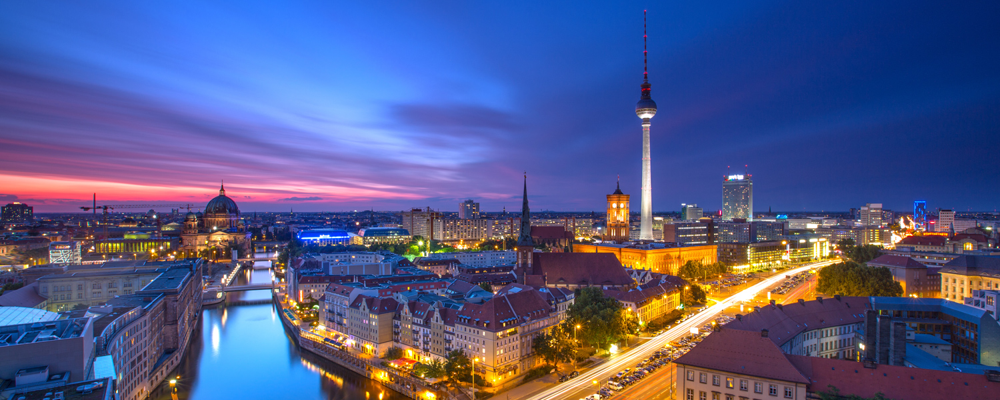
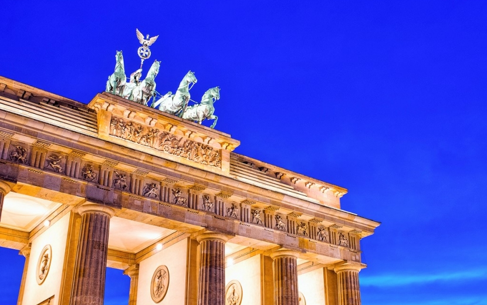
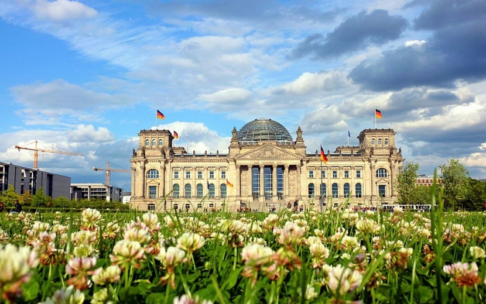
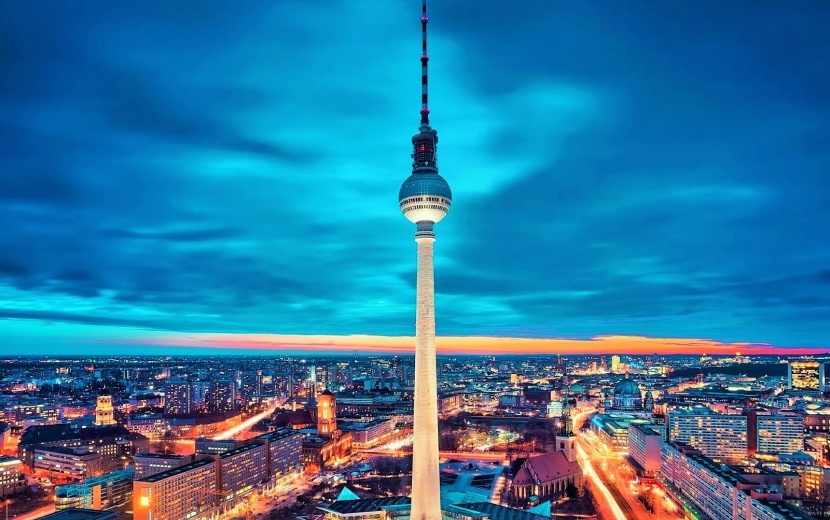
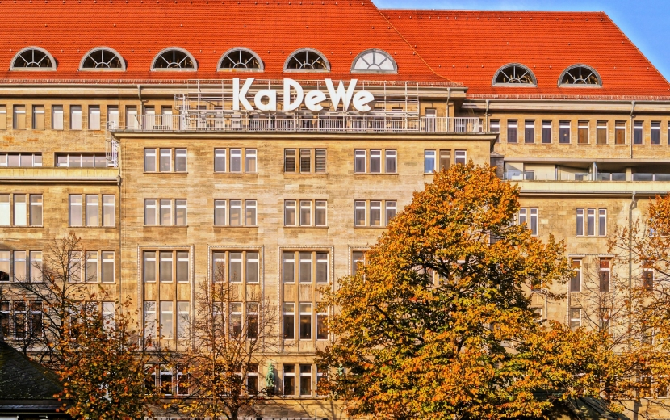

 Берли́н — столица и крупнейший город Германии, второй по населению (после Лондона) и пятый по площади город Евросоюза. Является одной из 16 земель в составе ФРГ. Город расположен на берегах рек Шпрее, в связи с чем Берлин называют «Афинами на Шпрее», и Хафель в центре федеральной земли Бранденбург, частью которой он не является с 1920 года. Сегодня Берлин является мировым культурным центром. Это крупный европейский транспортный узел и один из самых посещаемых городов на континенте. Университеты, исследовательские институты и музеи Берлина известны во всём мире. В городе живут и работают художники, дипломаты и иммигранты со всех уголков планеты.
| Страна | Германия |
| Земля | Берлин |
| Координаты | 52°31′00″ с. ш. 13°23′00″ в. д.HGЯO |
| Внутреннее деление | 12 округов, 96 районов |
| Правящий бургомистр | Михаэль Мюллер |
| Основан | 1237 |
| Официальный язык | Немецкий |
| Площадь | 891,85 км² |
| Высота НУМ | 34—115 м |
| Население | 3 490 105 человек (2015) |
| Плотность | 3834 чел./км² |
| Агломерация | 4 416 123 |
| Названия жителей | Берлинец, берлинка |
| Часовой пояс | UTC+1, летом UTC+2 |
| Телефонный код | +49 30 |
| Официальный сайт | berlin.de |
Что тоит посетить?
Вопреки курсу школьной географии, Берлин — не только столица Германии. Это город, который предлагает тысячу и одну возможность для своих гостей и жителей. Что особенно приятно — многими из них можно воспользоваться совершенно бесплатно или за весьма символическую сумму. Настоящая визитная карточка города, также являются одним из символов воссоединения Западного и Восточного Берлина. Построенные в начале XVIII века, Бранденбургские ворота являются лучшим примером немецкого классицизма. Если вы приедете в Берлин на новогодние праздники, обязательно приходите сюда в ночь на 1 января — именно здесь собираются местные жители, чтобы вместе отпраздновать наступление Нового года.
Когда-то это здание было символом нацизма и победы над ним во Второй мировой войне. Сегодня же Рейхстаг — это действующее здание немецкого парламента и самый известный ориентир в Берлине. Обязательно зарегистрируйтесь онлайн, чтобы подняться к знаменитому стеклянному куполу здания — оттуда открывается изумительный вид на город.
Местные ее называют Эйфелевой башней Берлина. И действительно — она стала современным символом города и видна буквально из всех его районов. Телебашня является также самой популярной достопримечательностью, которую ежегодно посещают более миллиона человек. Неудивительно — кто ж не захочет взглянуть на Берлин с высоты 203 метров. Наверху находится смотровая площадка, вход — от €13.
Огромный аквариум цилиндрической формы объемом в 1 000 000 литров воды расположен в фойе гостиницы Radisson SAS Berlin. Огромная колба с экзотическими рыбками и водорослями, в которой можно даже поплавать с аквалангом, вызывает неподдельное восхищение. Чтобы взглянуть на это чудо, нужно будет заплатить €16.
Как можно посетить Берлин и не отправиться на шопинг? Это большое упущение! Крайне рекомендуем отправиться в KaDeWe — самый большой и знаменитый торговый комплекс в Европе. Говорят, его площадь равняется девяти футбольным полям. Здесь собрано тысячи брендов и дизайнеров, о которых вы даже можете и не подозревать, а в мире они очень даже популярны.
Проникнуться историей
Большинство музеев в Берлине можно посетить, не потратив ни рубля (а точнее — ни единого евроцента). Например, в четверг не упустите возможность бесплатно посетить все пять музеев знаменитого Музейного острова, который является объектом всемирного наследия ЮНЕСКО. На создание этого музейного ансамбля (музей Боде, Пергамский музей, Старая Национальная галерея, Старый музей и Новый музей) ушло целое столетие. Время бесплатного посещения: 18:00 — 22:00. “Топография террора” — обязательная к посещению бесплатная инсталляция в Берлине. Это музей под открытым небом, четко и по делу повествующий о становлении фашизма и Третьего Рейха. Предмет инсталляции — пугающие фотографии и цифры, которые являются частью грустной истории 20-го века. На официальном сайте музея можно узнать его часы работы и адрес.
Поесть и выпить
Звучит это довольно странно, но в Берлине есть множество мест, где можно бесплатно поесть — и притом весьма неплохо! Например, каждый вторник все желающие могут отведать бесплатные тапас в уютном баре Art und Weise в районе Нойкельн. Правда, для того чтобы воспользоваться этим предложением, придется купить бокал пива или любой другой напиток (цены на бокал пива начинаются от 3-х евро). Адрес: станция метро “Leinestraße”, Leinestraße 48.
Каждое воскресенье c 16:00 можно угоститься бесплатным обедом/полдником в кафе Vetomat. Сюда отдается еда, которая остается в отелях и ресторанах с обеденного шведского стола: закуски и горячие блюда. Можно прийти с пластиковыми контейнерами и забрать что угодно домой, а можно поесть прямо на месте. Адрес: станция метро “Samariterstraße”, Scharnweberstraße, 35.
Не стоит пропускать и полюбившиеся местным жителям Hungry Mondays в заведении Alte Kantine, которое находится в культурном центре Kulturbrauerei (станция метро “Eberswalderstraße”, Knaackstraße, 97). Каждый понедельник в 22:00 здесь начинается веселье: всего за 3€ посетители могут рассчитывать на ужин из трех блюд, диско-музыку и партию в настольный теннис.
Немцы вообще уважительно и с большим пиететом относятся к еде. Отправлять на помойку тонны свежих еще продуктов, которые могут накормить не один десяток голодных людей? Нет, такое им даже представить сложно. Однако законы, касающиеся хранения еды в местах общепита, в Германии весьма строгие. Например, если в магазине отключается электричество на срок больше сорока минут, то все содержимое холодильников должно отправиться на помойку! А ведь есть еще пекарни, которые не имеют права продавать вчерашнюю выпечку, небольшие ресторанчики в торговых центрах с витринами, откуда все пиццы, роллы, бургеры и тонны прочей вкуснятины после закрытия отправятся в мусорный контейнер, отели, которые устраивают публичные бранчи и готовят еду с большим запасом…
Именно поэтому немцы (а точнее — берлинцы) организовали движение под названием “food sharing”. Фудшеринг — это проект по спасению годной к употреблению еды, которая должна отправиться на помойку в соответствии с немецкими законами. По сути, люди получают свежую и вкусную еду — от фруктов и овощей и до ресторанных блюд — совершенно бесплатно.
Звучит заманчиво, однако не все так просто. Чтобы записаться в проект, нужно отправиться на его официальный сайт, прочитать свод правил и заполнить анкету по мотивам этих правил. Никаких особых требований к участникам проекта нет, но желательно знать немецкий, так как сайт фудшеринга пока не переведен на другие языки. После этого можно записываться в группы, которые создаются для каждой точки выдачи еды, будь то магазин, отель, склад или ресторан. Еда раздается не абы как, а по особому расписанию — например, каждую среду и пятницу в 17:00. Каждый поход носит элементы сюрприза: можно стать обладателем трех десятков вареных яиц и пятидесяти сосисок, а можно получить три килограмма отменных маки-роллов. При правильном подходе (логичном выборе точек раздачи, соблюдении правил и пунктуальности) расходы на продукты питания можно сократить процентов на 80%.
Переночевать
Ситуации в жизни бывают разные: помимо приветливых и щедрых жителей в Берлине есть и не столь милые товарищи, которые не могут спокойно смотреть на плохо лежащий кошелек или сумку. Остаться без денег и документов в чужом городе, особенно когда дело идет к ночи, а на улице холодно, — удовольствие не из приятных. Однако, даже не имея ни копейки, в Берлине можно найти горячий ужин и крышу над головой на ночь. Место для бесплатного ночлега организовано церковной миссией Berliner Stadt Mission и находится рядом с главным вокзалом города. Здесь вам выдадут чистое белье и матрас и покормят. Количество кроватей ограничено, поэтому лучше приходить на час-два раньше официального открытия в 21:00. Адрес: станция метро “Berlin Hauptbahnhof”, Lehrterstraße, 68. Если же вы ищете жилье в Берлине надолго, то стоит рассмотреть вариант совместного съема квартиры с несколькими знакомыми или даже незнакомыми людьми, так называемый WG (Wohnungsgemeinschaft). Подробнее об этом вы можете прочитать по ссылке.
Фото:
   